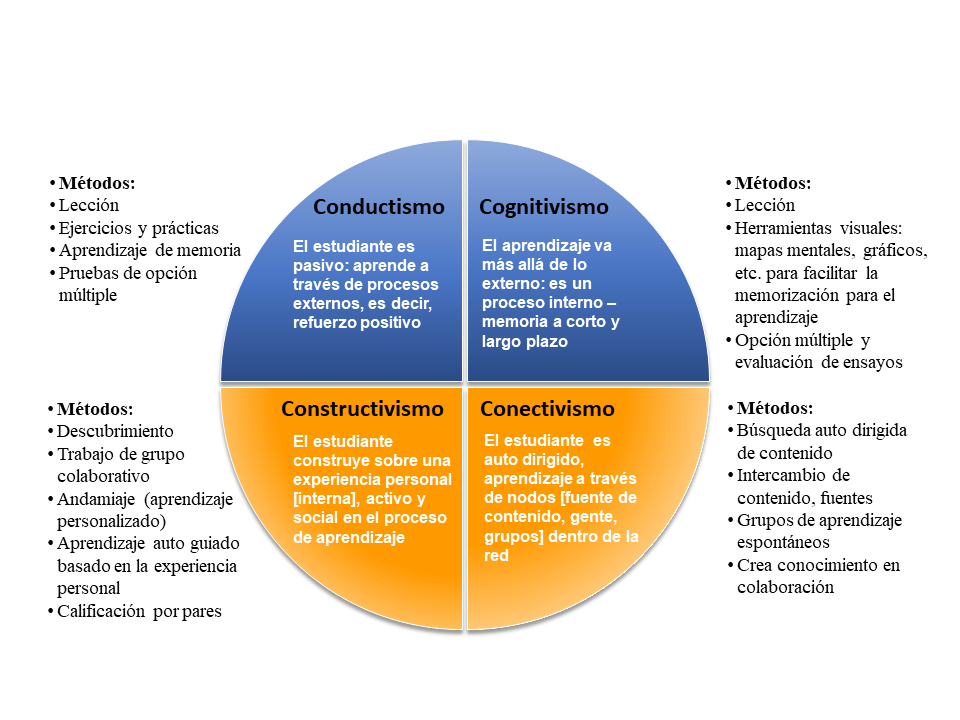

Sobre la enseñanza y la capacitación
Este capítulo proporciona un contexto sobre las estrategias de capacitación, una guía práctica para diseñar un curso y una descripción general de algunas teorías pedagógicas. Se centrará en tres conceptos clave para la enseñanza y la capacitación:
Preparación
Ejecución
Reflexión
La enseñanza y la capacitación involucran, en primer lugar, la preparación previa a la impartición de un curso. La preparación incluye la elección del contenido, la decisión sobre los métodos de enseñanza más appropiados y la secuenciación de los mismos para maximizar la efectividad y el impacto del entrenamiento. En segundo lugar, la enseñanza implica la impartición propiamente dicha, esto es, la manera en que se actúa e interactúa con los participantes. Incluso si estás muy familiarizado con un tema en particular, es muy aconsejable evitar impartir el curso antes de haber finalizado su total preparación. Además, es posible que necesites revisar y probar los contenidos, especialmente los ejercicios prácticos. Luego, durante el curso, necesitas ser flexible porque las cosas rara vez suceden complemente como tú lo esperas. Finalmente, la enseñanza también involucra la evaluación y la auto-evaluación posteriores a la impartición de un curso. Es más que probable que tengas que involucrarte varias veces con un mismo curso o uno similar, especialmente si la evaluación muestra que ha sido bueno.
Para prepararte mejor para futuros eventos deberías reflexionar acerca de qué funcionó bien y qué no funcionó tan bien, y emplear esto para definir iterativamente futuras preparaciones e imparticiones. En pocas palabras, hay un “antes”, un “durante” y un “después” de la clase (las actividades forman un ciclo, similarmente a lo que ocurre en la ciencia). Este capítulo proporciona una guía práctica para los capacitadores acerca de cómo preparar e impartir un curso para audiencias diferentes: cuáles son los principales obstáculos que se deben superar y cuáles son los principales problemas que se deben tener en cuenta al organizar un entrenamiento.
Algunas reflexiones antes de comenzar
A continuación nos enfocaremos, principalmente, en el primer aspecto (preparación) y luego te guiaremos en la planificación y la gestión de tu curso. Para empezar, hablaremos sobre algunos asuntos teóricos que te darán una idea de qué significa enseñar y aprender y cómo la enseñanza de adultos se diferencia de la enseñanza de adolescentes o niños.
Capacitación versus enseñanza
La enseñanza está más relacionada con los conceptos teóricos que la capacitación. La capacitación está relacionada con la aplicación práctica del conocimiento (es decir, con el desarrollo de habilidades).
La enseñanza busca impartir nuevos conocimientos, mientras que la capacitación equipa a quienes ya están formados con herramientas y técnicas para desarrollar un conjunto específico de habilidades.
La enseñanza se realiza, usualmente, en el contexto de ambientes educativos y académicos, mientras que la capacitación se asocia con cursos cortos e intensivos posteriores a la educación secundaria y/o universitaria de grado.
Usualmente los educadores proporcionan retroalimentación a sus estudiantes, mientras que los capacitadores reciben retroalimentación de los alumnos.
Sin embargo...
La capacitación es el proceso de enseñar o aprender una habilidad o una tarea, y los capacitadores realmente enseñan algo. Por lo tanto, la capacitación se puede considerar como una actividad más amplia que puede abarcar la enseñanza.
La enseñanza también puede incluir actividades y objetivos típicos de la capacitación, como sesiones prácticas y demostraciones.
A pesar de que, a veces, las técnicas de enseñanza y de capacitación pueden variar, la diferencia entre la capacitación y la enseñanza no está relacionada con el proceso per se, sino con el enfoque. La capacitación generalmente tiene un enfoque más específico que la enseñanza.
Para desarrollar capacidades como un profesional una persona necesita intentar comprender los conceptos teóricos y, también, tener exposición práctica. Por lo tanto, la enseñanza y la capacitación son conceptos educacionales igualmente importantes y complementarios.

Estrategias
Existen diferentes enfoques teóricos para el aprendizaje y la capacitación que, a veces, están influenciados por la cultura en la que vives. A algunas personas les gusta hablar y dictar clases. A otros les gusta escuchar, a otros no. Algunos ejercicios son simples y buscan respuestas claras. Otros ejercicios se centran en problemas y se enfocan en dar tiempo y espacio a los participantes para reflexionar sobre los problemas y encontrar soluciones. Finalmente, algunas capacitaciones están diseñadas para brindar a los participantes la máxima libertad y permitirles ser tan creativos como sea posible. El éxito de este tipo de capacitación es más difícil de evaluar.
El conductismo, el cognitivismo, el conectivismo y el constructivismo son cuatro teorías del aprendizaje bien conocidas. Ellas describen diferentes perspectivas sobre cómo aprende la gente.
Este diagrama simplificado resume sus principales características en términos muy prácticos:

Transcrito de:
El trabajo realizado por Software Carpentry también ayuda a comprender los procesos de aprendizaje: carpentries.github.io/instructor-training
El Marco Curricular Conectado (Connected Curriculum Framework)
El reciente movimiento llamado "Connected Curriculum Framework" tiene como meta modernizar los enfoques de aprendizaje y adaptarlos al estudiante del siglo XXI. El objetivo general del Framework es mejorar las relaciones entre la educación de los estudiantes y las prácticas de investigación eliminando divisiones innecesarias. El Framework valora el diálogo enriquecedor, la investigación activa, la colaboración y las interacciones tanto entre estudiantes e investigadores como entre las universidades y otras comunidades más amplias. Esto resulta prometedor para las áreas de la Ciencia Abierta y la Ciencia Ciudadana, la Colaboración Masiva, etc. Para mas información sobre el "Connected Curriculum Framework" puedes consultar la siguiente fuente: ucl.ac.uk/ucl-press/browse-books/a-connected-curriculum-for-higher-education
¿Es esto relevante para ti?
Lo que es importante saber es que existen diferentes enfoques y que no debes sentirte obligado a seguir sólo una estrategia. Más bien se trata de decidir en qué punto de tu capacitación debes aplicar cada estrategia para enseñar y evaluar.
Al final, lo que importa es la práctica, y puede ser útil verificar tu contenido y los ejercicios prácticos con uno de los enfoques teóricos para averiguar si ellos son apropiados para el momento determinado y para la audiencia objetivo.

Expectativas sobre un capacitador
Todos los que lleguen a tu capacitación vendrán con expectativas, conscientes e inconscientes. Entre otras (tales como metodología de enseñanza, contenido y conocimiento previo) tendrán expectativas específicas sobre el capacitador.
La mayoría de los estudiantes esperarán que:
Seas entusiasta con los temas que estás enseñando.
Tengas una comprensión general de los valores científicos (o humanistas) nucleares y reconozcas el papel de la ‘apertura’ como un elemento intrínseco y central de ellos.
Comprendas la importancia de factores tales como la transparencia de la investigación y la reproducibilidad, y las implicaciones sociales más amplias de ellos.
Muestres familiaridad con el proceso de investigación, incluyendo la planificación de la investigación, su realización, la producción de resultados de investigación y la comunicación y publicación de dichos resultados.
Conozcas los diferentes tipos de procesos de investigación y resultados que pueden ser compartidos, incluyendo datos, código y software, artículos científicos, comunicación, flujos de trabajo, solicitudes de financiamiento y planes de gestión de datos.
Estés informado sobre las políticas, regulaciones y leyes que podrían afectar a los investigadores al practicar la Ciencia Abierta
Comprendas las presiones que resultan de las políticas institucionales (o de la falta de ellas) que determinan la manera en que los investigadores manejan los datos y los resultados, desde la etapa en que ellos se adquieren hasta las etapas en que ellos se comparten y difunden.
Comprendas las expectativas que se generan en el tejido social sobre el uso de recursos y los resultados de las actividades científicas, tales como su impacto en la Ciencia Ciudadana, la comprensión pública de la ciencia, la influencia sobre los profesionales de la educación, etc.
Seas capaz de enseñar y tener un profundo conocimiento sobre la Ciencia Abierta (de hecho, de esto se trata este libro).
Proporciones enlaces a documentos en línea y recursos que apoyen a los principiantes.
Audiencias destinatarias
Una buena manera de comenzar con tu entrenamiento sobre Ciencia Abierta es dirigirte a audiencias que tengan alguna idea y/o estén interesadas en el tema. Generalmente, estas personas pueden estar más abiertas a la idea de Ciencia Abierta. Comenzar tu entrenamiento con una audiencia motivada tiene varias ventajas:
Saber que tu audiencia está realmente interesada en el tema puede hacer que te sientas más cómodo sumergiéndote en una nueva área/tema de capacitación. Puedes considerar la realización de una encuesta para evaluar esto por adelantado.
Una audiencia motivada probablemente contribuirá a la discusión y te proporcionará información útil sobre cómo desarrollar tu currícula de capacitación.
Las audiencias motivadas pueden convertirse en embajadores de tu capacitación.
Información que necesitas recolectar sobre tu audiencia:
Mantener un ambiente inclusivo y tener en cuenta la formación de los posibles asistentes es importante para el éxito de cualquier evento de capacitación. Para aprender cómo hacer que tu taller sea inclusivo, mira la Conference Planning Checklist de SPARC.
Que los miembros de la audiencia se conozcan entre sí o no afectará la dinámica del grupo y el tipo de actividades que podrías querer llevar a cabo.
Si la participación es voluntaria o no influirá su motivación.
El nivel de conocimiento de la audiencia sobre los temas de discusión planificados afectará al contenido y al estilo de las presentaciones.
Que la audiencia esté habituada a un método de aprendizaje específico puede afectar la reacción de los participantes a los muy diversos formatos de capacitación.
Tamaño de la audiencia:
Establece el tamaño de la audiencia basándote en la disponibilidad de espacio/capacidad y de tiempo para el trabajo práctico.
El tamaño de la audiencia impactará sobre la forma en que sus miembros se relacionarán e interactuarán con el proceso.
Si deseas una audiencia más numerosa, considera separar a los asistentes en grupos y los requisitos logísticos que esto podría conllevar.
Considera si tu evento será abierto al público o limitado a los afiliados a la institución anfitriona. Un evento público puede ayudar a aumentar y diversificar la asistencia, mientras que uno limitado puede ayudarte a enfocar temas particulares. Por otro lado, es probable que los asistentes de una misma institución ya se conozcan entre sí.
Considera utilizar videoconferencias, ya que podrías alcanzar a un público más amplio. No obstante, con un grupo pequeño de personas asistentes a un evento presencial es más fácil mantener la atención y crear y utilizar una sensación de conexión auténtica.
Considera cuál es la mejor manera de abordar diferentes audiencias (reuniones, talleres presenciales, seminarios web, boletines informativos, redes sociales, etc.)
Con una audiencia heterogénea, ten en cuenta a las diferentes partes interesadas para abordar sus diferentes necesidades, conocimientos y/o responsabilidades:
Financiador, institución/empleador, investigador (estudiante de grado, estudiante de doctorado, investigador, líder de proyecto),
Servicio de soporte (oficina de investigación, biblioteca, TI)
Colaborador comercial en un proyecto
El resultado de la capacitación debería ser que los estudiantes:
- Tengan una mejor comprensión práctica de los conceptos clave y sus correspondientes aplicaciones para la Ciencia Abierta.
- Usen con confianza lo aprendido durante la capacitación, aumentando su impacto en su entorno profesional.
- Sean capaces de vincularse con defensores de distintas disciplinas y de actuar en una iniciativa global para la Ciencia Abierta.
Enseñando a adultos
La investigación académica es practicada por adultos. Por lo tanto, es probable que los participantes de cualquier capacitación en Ciencia Abierta sean adultos que poseen, a menudo, un primer o segundo título de grado. Por ende, es interesante ver hasta qué punto difiere la enseñanza de niños o adolescentes (pedagogía) de la enseñanza de adultos (andragogía). La Red Canadiense de Alfabetización y Aprendizaje (The Canadian Literacy and Learning Network) realizó un trabajo interesante sobre esta diferencia y la recapituló en siete principios:
Los adultos deben querer aprender. Esto significa que la motivación intrínseca y los valores agregados son decisivos y que podría valer la pena conocerlos antes de comenzar el curso.
Los adultos solo aprenderán lo que sientan que necesitan aprender. Los adultos son prácticos en su enfoque de aprendizaje; quieren saber, "¿Cómo me va a ayudar esto ahora?" Por lo tanto, deberías ser práctico y directo.
Los adultos aprenden haciendo. Esto también es cierto para los niños, pero la participación activa e inmediata es más importante para los adultos.
El aprendizaje de los adultos se enfoca en problemas, y los problemas deben ser realistas. Los participantes a menudo vendrán con un problema y será tu tarea descubrir brechas y tratar de cerrarlas.
La experiencia afecta el aprendizaje de los adultos. Los adultos tienen más experiencia que los niños, ya sea negativa o positiva. Puedes hacer uso de esta experiencia evitando las asociaciones negativas.
Los adultos aprenden mejor en una situación informal. Los jóvenes en edad escolar generalmente tienen que seguir una currícula. A menudo, los adultos aprenden sólo lo que sienten que necesitan saber. Por lo tanto, deberías tratar de involucrar a tu audiencia en el proceso de aprendizaje. Esto puede suceder haciendo que el ambiente sea relajado, informal y acogedor.
Los adultos quieren orientación. Los adultos desean información que les ayude a mejorar su situación o resolver problemas, pero no quieren que se les diga qué hacer, sino que prefieren elegir entre diferentes opciones basándose en sus necesidades individuales.
Por lo tanto, necesitarás:
Proporcionar los puntos de descubrimiento, herramientas y brindar apoyo a los investigadores sobre dónde encontrarlos
Preparar documentación en línea con una guía clara, comprensible y actualizada
Reunir herramientas de calidad, utilizables (y localizables), o plantillas para generarlas.
En resumen, los adultos enfocan sus intereses en su propia mejoría y ven a la capacitación como un ejercicio centrado en sí mismos para desarrollar capacidades. A los adultos les gusta ser respetados como tales y que sus expectativas individuales se cumplan de manera exhaustiva, siempre que ello sea posible.
La Taxonomía de Bloom
Los resultados del aprendizaje son a menudo el medio más específico para establecer cómo se imparte un curso de formación, adaptando aquello que sea necesario para que el mayor porcentaje de los resultados esperados sea alcanzado por la mayor parte de la audiencia. Los participantes alcanzan los resultados de formas diversas, a menudo evaluables cuantitativamente.
Especificar los resultados forma parte de la gestión de la capacitación como proceso cognitivo. En 1956, Benjamin Bloom creó una taxonomía de niveles cognitivos que ha sido modificada a través del tiempo. Se trata de una herramienta muy útil para construir resultados de aprendizaje consistentes y reutilizables en cualquier área temática. Las transiciones entre niveles cognitivos no contiguos no es, generalmente, aceptable. La taxonomía ayuda a detectar situaciones potencialmente difíciles en las que la evaluación puede fallar porque el nivel cognitivo empleado en la enseñanza no es el mismo que el nivel cognitivo empleado durante la evaluación.## 
Una versión actual (desde 2001) puede encontrarse, también, aquí: thesecondprinciple.com/teaching-essentials/beyond-bloom-cognitive-taxonomy-revised/
La Taxonomía de Bloom es un método de clasificación con seis niveles. El esfuerzo de usar la Taxonomía de Bloom vale la pena porque representa un paso significativo hacia el deseo de construir una capacitación y una enseñanza robustas. Junto con la Taxonomía de Bloom puedes encontrar varios tipos de ayudas para el diseño tales como terminologías comentadas y verbos para usar o evitar durante la planificación del curso y la formulación de pregunteas para la evaluación, etc.
Objetivos de aprendizaje y resultados de aprendizaje
Estos dos términos suelen ser utilizados intercambiablemente por la comunidad de capacitadores. Los objetivos, que incluyen propósitos o metas, y los resultados, que comprenden consecuencias tangibles, pueden superponerse, pero no son realmente lo mismo.
Al diseñar la capacitación, debes pensar principalmente en los objetivos, luego enumerar los resultados que deseas que tu audiencia alcance. No te preocupes si ellos parecen superponerse o si, como sucede en la mayoría de los casos, un objetivo encierra uno o más resultados. Diseña todos tus ejercicios prácticos en torno a resultados específicos.
Aquí un intento de aclarar esta situación y eliminar ambigüedades:
Objetivos de aprendizaje
Describen las metas e intenciones del capacitador.
Manifiestan el propósito y las metas del curso.
Se enfocan en el contenido y las habilidades importantes dentro del aula o programa.
Pueden describir lo que harán los instructores.
Deben ser específicos y detallados.
Resultados de aprendizaje
Los resultados de aprendizaje de los estudiantes catalogan los "productos" globales del curso y son la evidencia de que las metas u objetivos fueron logrados.
Los resultados de aprendizaje son enunciados que describen o listan (i) habilidades medibles y esenciales que reflejan el dominio y el conocimiento de los contenidos, (ii) competencias y (iii) conocimientos que los estudiantes han alcanzado y pueden demostrar al completar con éxito un curso.
Los resultados expresan habilidades de pensamiento de alto nivel que integran el contenido y las actividades del curso y que pueden ser observadas como un comportamiento, competencia o conocimiento discreto utilizable al completar el curso.
Los resultados son exactamente lo que las evaluaciones pretenden demostrar - específicamente lo que el estudiante será capaz de hacer al completar el curso.
Un resultado medible pueder ser mostrado u observado y evaluado de acuerdo con criterios.
Los resultados son indicadores claros y medibles para guiar los procesos de enseñanza, aprendizaje y evaluación en el curso.
(Adaptado de provost.rpi.edu/learning-assessment/learning-outcomes/objectives-vs-outcomes)
Para objetivos de aprendizaje de Ciencia Abierta, mira este documento de FOSTER:doi.org/10.5281/zenodo.15603 (páginas 13 y 14)
Ejemplo de un objetivo de capacitación:
- "Aprender cómo usar la evaluación y la retroalimentación en la capacitación con la máxima efectividad"
Ejemplo de un resultado de aprendizaje:
- "Al completar el curso, el alumno podrá diseñar un ejercicio de capacitación y una estrategia para evaluar su efectividad"

Motivación y desmotivación
Uno de los componentes clave en un evento de capacitación es asegurarse de que la falta de confianza que los participantes puedan tener cuando se les introduce a un nuevo campo (Ciencia Abierta, en este caso) no los desanime a seguir adelante. Incluso si algunos participantes están familiarizados con los conceptos presentados en el evento de capacitación, es importante reconocer cuándo las personas empiezan a confundirse. Reconocer que sus equivocaciones son válidas es clave para alentar una mentalidad de crecimiento y motivarlos a aceptar y apoyar las prácticas de Ciencia Abierta.
A través del evento de capcitación pueden emplearse varias estrategias para motivar a los participantes. (Tomado de Carpentry Instructor Training, carpentries.github.io/instructor-training/08-motivation/)
Estrategias para establecer el valor de la capacitación
Conecta el material a los intereses o valores de los participantes.
Proporciona tareas y estudios de caso auténticos y reales, que idealmente se adapten a los antecedentes e intereses inmediatos de los participantes.
Muestra la relevancia para las vidas académicas de los participantes.
Transmite tu propia pasión y entusiasmo por la Ciencia Abierta.
Estrategias para construir expectativas positivas
Asegura la alineación de los objetivos, las evaluaciones y las estrategias de instrucción.
Proporciona oportunidades para el éxito desde el comienzo mediante la aplicación de conceptos en ejercicios prácticos y tutoriales.
Estrategias para la autoeficacia
Proporciona a los participantes opciones y la posibilidad de que hagan elecciones.
Ofrece a los participantes una oportunidad para reflexionar y establecer sus propias conexiones entre la Ciencia Abierta y su trabajo en particular.
Guía práctica
Encontrarás más información sobre la planificación y la ejecución concretas de una capacitación sobre Ciencia Abierta en los capítulos sobre los Aspectos Organizacionales y los Ejemplos y Guías Prácticas.
Cómo diseñar un curso
La creación de tu curso estará impulsada por la planificación de los objetivos o resultados del mismo.
Planificación basada en objetivos más que en resultados
SMART es una técnica interesante para especificar metas u objetivos que también es utilizada en la gestión de proyectos. SMART es un acrónimo para cinco criterios: Simple - Medible - Ambicioso - Realista - a Tiempo (Simple – Measurable – Ambitious – Realistic – Timed en inglés).
Tu objetivo es simple si puede ser comprendido por una persona que no está familiarizada con el tema. Es decir que puedes explicar a tus alumnos, de antemano, qué es lo que van a aprender. Por lo general, es una buena idea presentar tu objetivo al comienzo de una lección. Simple significa que la meta se puede resumir en no más de una oración concisa.
Tu meta es medible si puedes determinar objetivamente si se ha alcanzado. La capacidad de medición evita objetivos imprecisos como "los estudiantes entienden la Ciencia Abierta" que es demasiado amplio y difícil de medir, ya que involucra muchos componentes distintos. En su lugar, utiliza verbos prácticos: identificar, dibujar, nombrar, explicar, calcular, etc. Los verbos de los buenos objetivos de enseñanza han sido categorizados por la taxonomía de dominios cognitivos de Bloom (clinton.edu/curriculumcommittee/listofmeasurableverbs). La medición te ayudará a ti y a tus estudiantes a evaluar o autoevaluar el progreso.
Tu objetivo es ambicioso si desafías a tus estudiantes. ¿Hay un beneficio claro para ellos? ¿Quieres que la lección amplíe su horizonte? ¿De qué manera esto les da una ventaja? Ser ambicioso significa tener una respuesta a la pregunta: ¿Qué aprenderán los estudiantes que no podrían aprender por otros medios? Si sientes el deseo de adoptar un posicionamiento y defender tu punto de vista, probablemente se trate de un objetivo ambicioso.
Tu objetivo es realista si crees sinceramente que tu objetivo de aprendizaje puede ser alcanzado en el tiempo establecido. Ser realista involucra hacer tarea: ¿Tienen tus alumnos los conocimientos básicos necesarios? ¿Qué habilidades prácticas necesitan? ¿Qué prerrequisitos técnicos hay? ¿Estás preparado para preguntas inesperadas? Por ejemplo, comprender todas las licencias Creative Commons en una hora puede ser realista para un grupo pero inalcanzable para otro.
Tu objetivo está a Tiempo si existe un período de tiempo concreto en el debe alcanzarse. Los maestros principiantes suelen exceder su presupuesto temporal. Establecer límites de tiempo para tus objetivos de aprendizaje te ayuda a estructurar tu lección, y a reconocer y reaccionar ante retrasos inesperados. Una buena forma de planificar el tiempo es tener un programa detallado o un plan para la lección.
Adaptado de SMART Goals, How to create objective, measurable project goals de Kristian Rother.
Planificación basada en resultados más que en objetivos
Usa el diseño de instrucción invertido, conocido como Diseño en Retrospectiva, una técnica para planificar lecciones que enfatiza los resultados:
Comienza desde tus objetivos de aprendizaje.
Decide qué constituye evidencia de que estos objetivos se han cumplido (evaluación sumativa, ver evaluación post capacitación más abajo).
Elige el mejor formato y diseño de contenido para preparar a la audiencia para lo que tendrán que hacer durante la evaluación sumativa.
Organiza el contenido en orden creciente de complejidad y luego proporciona el contenido y la motivación que necesitan para cerrar la brecha entre lo que saben y lo que necesitan saber para completar la evaluación sumativa. (Software Carpentry Instructor Training)
El Diseño en Retrospectiva desafía los métodos "tradicionales" de planificación curricular. En la planificación del currículo tradicional, se crea y/o selecciona una lista de contenido que se enseñará. [4] En el Diseño en Retrospectiva, el educador comienza con objetivos, crea o planifica evaluaciones y finalmente prepara unidades didácticas. Los partidarios del Diseño en Retrospectiva asemejan el proceso con el uso de un "mapa de ruta". [5] En este caso, primero se elige el destino y luego el 'mapa de ruta' se utiliza para planificar el viaje al destino deseado. En contraste, en la planificación del currículo tradicional no hay un destino formal identificado antes de que comience el viaje.
La idea en el Diseño en Retrospectiva es enseñar tendiendo hacia el "punto final" o los objetivos de aprendizaje, lo que generalmente garantiza que el contenido enseñado permanezca enfocado y organizado. Esto, a su vez, apunta a promover una mejor comprensión del contenido o los procesos a enseñar a los estudiantes. El capacitador puede concentrarse en lo que los estudiantes necesitan aprender, en los datos que se pueden recopilar para demostrar que los estudiantes han alcanzado los resultados deseados (o estándares de aprendizaje) y en cómo asegurar que los alumnos aprendan.
Contenido
Recolección de contenido
Antes de comenzar a enseñar tendrás que recopilar y preparar el contenido. Hoy en día el contenido está disponible masivamente. Por ende, ya no se trata de la búsqueda o la creación de contenido sino de la búsqueda de contenido apropiado o de hacer que el contenido que se ha encontrado sea apropiado para las necesidades y capacidades de tu audiencia destinataria.
Por favor, revisa el capítulo acerca de Ejemplos y Guía Práctica que contiene información útil sobre cómo adoptar, adaptar y desarrollar contenido.
Reducción de contenido
Uno de los mayores desafíos en el diseño de cursos de capacitación es la reducción del contenido al formato de la capacitación. Si solo tienes dos horas, debes proporcionar la información más importante sobre un tema durante este tiempo. Sin embargo, como capacitador generalmente tienes mucho más conocimiento que te gustaría transmitir. Trata de reducir el contenido a los puntos clave más importantes. ¿Qué es realmente necesario saber y qué es un detalle o tema marginal? Establece prioridades temáticas, sé transparente acerca de las omisiones e informa a tus participantes sobre ellas.
Trata de dejar suficiente tiempo para preguntas abiertas, discusiones y compartir experiencias entre los participantes. Esto te ayudará a conseguir las preguntas "correctas". Por lo general, serán mucho más básicas de lo esperado o más detalladas y específicas de lo planeado.
Comenzando la capacitación
Presentaciones
Al comienzo del evento, los instructores deben presentarse clara y sucíntamente a sí mismos y sus áreas de experticia. ¿Por qué los asistentes deberían escucharte? ¿Qué experiencia y habilidades tienes que son relevantes para ellos? Luego debes hacer una presentación general de los objetivos, el contenido y los resultados del evento de capacitación - qué aprenderán los participantes y por qué. Proyectar confianza como figura es clave para establecer la confianza.
Dependiendo del tamaño de tu audiencia, la cantidad de tiempo disponible y el grado de importancia que la interacción de la audiencia tendrá para el éxito de los resultados de la capacitación, puedes comenzar haciendo que los participantes se presenten brevemente (aunque esto probablemente no sea recomendable si el grupo tiene más de 15-20 participantes). Éste podría ser un buen momento para conocer los pensamientos de los participantes sobre sus expectativas y niveles de experiencia (si no se ha hecho antes, por ejemplo, con un cuestionario en línea), y evaluar en qué medida concuerdan con los resultados esperados y tu caracterización de la audiencia destinataria de la capacitación. Si hay una gran discrepancia, ahora sería el momento de considerar alguna forma de adaptar el programa espontáneamente. Por ejemplo, si los participantes tienen más conocimiento o experiencia de lo previsto, probablemente desees avanzar más rápidamente sobre los aspectos básicos en áreas específicas de la Ciencia Abierta para dedicar más tiempo a una discusión interactiva en la que las preguntas y las experiencias de los participantes ocupan el lugar más importante.
Ten en cuenta que no existe una necesidad absoluta de adaptar el contenido de inmediato, sólo sé claro permitiendo que todos los participantes sepan qué será abordado o no.
Una vez más, la información entregada por Software Carpentry puede ser útil para crear el ambiente adecuado.

Romper el hielo
Con el fin de activar a los miembros de la audiencia y ayudarlos a conocer a los capacitadores y a los demás, muchas sesiones de capacitación comienzan con un ejercicio para romper el hielo. Crear un ambiente de aprendizaje cálido, acogedor, amigable y positivo debería permitir a los asistentes participar y aprender mejor, y ayudar a que ellos se sientan más cómodos.
Si bien los juegos para romper el hielo pueden ayudar a crear una atmósfera positiva, uno mal elegido puede producir el efecto contrario, haciendo que las personas se sientan nerviosas o incómodas. Debes considerar cuidadosamente a tus asistentes y las posibles dinámicas de grupo al elegir un juego para romper el hielo. Las personas no deben sentirse avergonzadas ni ser obligadas a revelar información personal que no desean compartir. Los grupos diferirán en aspectos importantes. Que los asistentes tengan edades o estatus diferentes dentro de una organización, diferentes niveles culturales o diferentes niveles educativos afectará el grado de confluencia que podría existir entre ellos. Trata de mantener estos ejercicios vinculados con los resultados de aprendizaje esperados.
Durante la capacitación
Define los resultados esperados de la capacitación y siempre brinda orientación a tus estudiantes:
¿Dónde estamos?
¿Dónde queremos ir?
¿Qué abarcaremos?
Establece un equilibrio entre las exposiciones orales sobre el contenido (máx. 20 minutos) y las sesiones de actividades para trabajar sobre el contenido (Klaus Döring, 2008).
¡Haz siempre que las voces de los alumnos se oigan lo antes posible o, en otras palabras, apuesta por un aprendizaje activo!
Aprendizaje activo
El aprendizaje activo es un proceso en el cual los alumnos se involucran activamente con el aprendizaje, en lugar de absorber lecciones "pasivamente". El aprendizaje activo involucra la lectura, la escritura, la discusión y el involucramiento en la resolución de problemas, el análisis, la síntesis y la evaluación. El aprendizaje activo suele implicar el aprendizaje cooperativo con otros asistentes.
Utilizar los principios del aprendizaje activo y su implementación en la capacitación es, en general, una buena idea. Tú eres el segundo mejor juez para determinar los beneficios de éste. Recuerda que el primer juez es el participante.
El aprendizaje activo ayuda a eludir la diversidad en los estilos de aprendizaje y otras dificultades con las audiencias. Además de resultar más eficiente para alcanzar resultados de niveles más altos, el aprendizaje activo también resuelve problemas cognitivos relacionados con la naturaleza del contenido y la forma de presentarlo, como se muestra en el siguiente diagrama, comúnmente encontrado en varios libros de texto y recursos en línea, conocido como el Cono del Aprendizaje. El aprendizaje activo se utiliza mejor en los niveles superiores de la Taxonomía de Bloom (Analizar, Definir, Crear, Evaluar), que también corresponden a los estratos superiores de memorización: lo que dices, escribes o haces (la mitad inferior del Cono del Aprendizaje). Los problemas cognitivos surgen con más facilidad cuando el contenido abarca varios de estos niveles a la vez y no logra abordar los niveles intermedios. Comparar tu contenido con el Cono del Aprendizaje es una forma fácil de detectar estas posibles omisiones mientras impartes la capacitación. Asimismo, te permite decidir emplear más ayudas visuales donde esperas que la necesidad de memorización sea mayor. Por lo tanto, cuando tu audiencia se quede atrás, puedes utilizar esta técnica para diagnosticar, intentar localizar las causas y elegir la solución más efectiva.
Gamificación
Los fundamentos de la metodología del Aprendizaje Activo se encuentran en las teorías modernas del aprendizaje (en parte en el constructivismo y en el conectivismo) e incorporan técnicas de involucramiento con el aprendizaje para romper barreras y sortear tantos obstáculos como sea posible. Por ejemplo, incluir juegos en el aprendizaje puede alejar a los alumnos de la adquisición pasiva de contenido hacia una implicación total, lo que conduce al reposicionamiento del alumno como alguien que observa el proceso de aprendizaje y cómo funciona. Aquí se muestra un ejemplo de gamificación en la formación: Key Terms, un juego de aprendizaje para la consolidación conceptual. Un ejemplo adicional se puede encontrar en CURATE: The Digital Curator Game.
Participación inclusiva
¿Cómo involucrar a participantes tímidos? Un buen punto de partida podría ser hacer una pregunta y esperar al menos 30 segundos para obtener respuestas (Mary Budd Rowe, 1986). El resultado será que más personas participarán en la discusión, las respuestas serán de mejor calidad y los alumnos que aprenden más lentamente tendrán la oportunidad de responder.
Otro método para lograr una participación inclusiva es la acumulación progresiva. Un moderador elige quién habla a continuación de entre aquellos participantes que desean hablar pero que aún no han hablado. Además, se eligen para hablar, primero, a aquellos cuya identidad étnica o de género está subrepresentadas.
Durante las discusiones (en grupos más grandes) debes evitar el uso de micrófonos fijos con una dinámica de tipo 'el primero que llega es el primero que habla', ya que desalienta la participación inclusiva y alienta el monólogo. En su lugar, usa un micrófono inalámbrico o solicita que la audiencia levante la mano para que el moderador pueda seleccionar quién hablará a continuación. Cuanto más grande sea el grupo, mayor será la necesidad de un moderador que supervise quién está hablando y quién no. También será tarea del moderador elegir quién hablará a continuación de entre aquellos participantes que deseen hablar pero que aún no han hablado, para evitar que la participación en el taller sea dominada por unos pocos participantes.
Recomendaciones generales
¡Mantente conectado! Siempre trata de mantener el contacto con el grupo, chequea tu ritmo y el de los demás.
Ten cuidado de no sobrecargar a los participantes con demasiado contenido y/o contenido muy difícil.
Mantente abierto a comentarios en cualquier momento, pero evita o diluye las discusiones interminables.
Pausas: da siempre suficiente tiempo para los descansos. Cuanto más largo sea tu curso, más largos y más frecuentes deben ser tus descansos.
Prepara versiones cortas, medias y largas de tus ejercicios para tener flexibilidad en caso de que las discusiones sean más o menos intensivas.
Mantente preparado para los estudiantes difíciles y consulta alguna guía de resolución de problemas antes del curso.
(Puedes encontrar algunas ideas en el MozFest2017 Facilitator Guide). En cualquier caso, debes tener una idea de qué hacer cuando surge una conversación paralela o qué hacer cuando alguien es constantemente grosero o desatento, etc. Debes saber que hay formas verbales y no verbales de afrontar esto.
Conclusión / Visión meta: al final de la capacitación podría valer la pena contarles a los participantes qué hiciste y por qué lo hiciste. Esto también hará la evaluación más fácil.
Disfuta tú mismo de la sesión.
Retroalimentacion instantánea
Al final de cada módulo, solicita retroalimentación de los participantes bajo la forma de "uno arriba/uno abajo" (esto es, que indiquen una cosa que fue útil/buena en el módulo y una cosa que no estuvo clara/podría mejorarse). Esto también puede hacerse de modo más graduado/estandarizado. Aquí hay un ejemplo de retroalimentación con 6 grados.
Otra forma de obtener retroalimentación instantánea, especialmente en puntos predefinidos, es a través de encuestas continuas. Por ejemplo, Slack puede emplearse para proporcionar retroalimentación anónima sobre la marcha, proveyendo a los miembros de un canal la opción de cambiar su elección en una encuesta en cualquier momento. Los casos de retroalimentación deben mostrarse a los participantes. Mostrar números totales o gráficos puede actuar como un incentivo. Las herramientas en línea basadas en la nube generan mayor participación, especialmente porque la dependencia de dispositivos como los mandos para presentaciones está desapareciendo. Los estudiantes pueden usar dispositivos móviles conectados a Internet y sentirse empoderados. Los ejemplos de esto son abundantes. Debes probar los métodos antes de usarlos con una audiencia real, y comenzar con los sistemas que tengan pasos de familiarización más simples, como Socrative y LearningCatalytics, Polleverywhere, o Directpoll.
Algunas otras estrategias de retroalimentación instantáneas se pueden encontrar en teachthought.com
Evaluación de la capacitación
La capacitación exitosa en Ciencia Abierta también necesita fases de evaluación. Especialmente al comenzar un curso resulta útil revisar los comentarios de los alumnos. Una evaluación puede proporcionarte reflexiones valiosas sobre tus métodos y contenidos. La evaluación continua y la consideración de la retroalimentación mejoran la calidad de la capacitación y el desempeño del capacitador.
Tipos de retroalimentación
Hay distintas maneras de obtener retroalimentación de tus participantes:
Formas clásicas de evaluación
Usa un formulario de evaluación en el que pides a los participantes sus comentarios sobre ti como instructor.
Obtén opiniones intermedias durante el curso para verificar si el curso cumple con las expectativas. Esto te da la oportunidad de hacer ajustes antes de continuar.
Retroalimentación verbal
- Solicita a los participantes un breve resumen de su experiencia en el curso.
Autoevaluación
- Haz tu propia evaluación: ¿Qué marchó bien? ¿Qué salió mal?
Retroalimentación a largo plazo
- 6 meses después, se pregunta sobre cambios en el comportamiento, generalmente más sobre modificaciones en la actitud y sus efectos potenciales.
Comentarios entre pares
- Tus colegas te ayudarán a preparar tu curso con su experiencia y, eventualmente, asistirán ellos mismos al curso, intercambiarán contigo luego y te harán comentarios.
Métricas para la eficiencia del entrenamiento.
Para evaluar un curso debes establecer, primero, con qué quieres que tus alumnos se familiaricen y qué quieres que conozcan, analicen críticamente o puedan explicar ¿Por qué estás haciendo el curso? ¿Qué metas quieres lograr? Y una vez que el curso haya terminado, debes verificar si has alcanzado esos objetivos. Existen diferentes criterios sobre cómo medir el éxito y la eficiencia de tu curso (Kirkpatrick & Kirkpatrick, 1994):
Reacción (cumpliendo con las expectativas): ¿Están satisfechos los alumnos con el curso? ¿Han alcanzado los participantes sus metas de aprendizaje? ¿Fueron realistas las expectativas? ¿Cómo reaccionaron los alumnos al curso? ¿Hubo una estructura clara o un hilo conductor?
Aprendizaje: ¿Aprendieron algo nuevo los asistentes? ¿Es ello útil en su situación actual? ¿Lo entendieron todo? ¿Pueden vincular las herramientas/plataformas sugeridas a las prácticas respectivas en Ciencia Abierta? ¿Cumplieron los objetivos de aprendizaje pre-especificados?
Comportamiento: ¿Cambiarán su forma de realizar investigaciones? ¿Qué harán con los conocimientos adquiridos? ¿Recomendarán la capacitación/contenido a otros?
Resultados: ¿Qué resultados, cuando se han cumplido, tienen un impacto más positivo sobre los objetivos? ¿Cuáles fueron los más beneficiosos?
Técnica de evaluación del entrenamiento de Kirkpatrick
El modelo de evaluación del entrenamiento en cuatro niveles de Kirkpatrick es una forma estandarizada de analizar la efectividad y el impacto de tu entrenamiento.
Ejercicios
Verifica el resultado del aprendizaje con ejercicios con textos a completar y cuestionarios.
Haz un ejercicio simple al comienzo y el mismo ejercicio al final. Luego, mira si las opiniones han cambiado.
Palabras clave: Prepara hojas de papel que incluyan diferentes aspectos clave de la Ciencia Abierta. Divide a los participantes en grupos (de al menos 3 personas) y deja que cada uno de ellos explique 2 o 3 palabras clave a los demás.
Entrega a los participantes una copia impresa de la estructura general del método científico y pídeles que asignen herramientas y métodos de la Ciencia Abierta que puedan aplicarse en ella.
Dependiendo del tiempo disponible, también puedes pedirles que creen un escenario de investigación imaginario/simple y que establezcan los protocolos de Ciencia Abierta para él.
Reorganiza tu curso
Tendrás tus propias expectativas antes de impartir el curso, y la experiencia de haberlo hecho te demostrará que las cosas no siempre funcionan como lo planeaste. No debes decepcionarte demasiado, porque alcanzar todos tus objetivos en tu primera vez es casi imposible. Más bien toma el final del curso como un punto de partida para reorganizar tu material y repensar algunos de tus métodos y ejercicios prácticos.
Ten en cuenta que te puede tomar hasta tres intentos tener la sensación de que tu curso tiene el formato que necesita y que satisfará tanto a los asistentes como a ti como instructor.
Resultados de aprendizaje de este capítulo
Después de leer este capítulo deberías poder planificar y realizar actividades de capacitación en Ciencia Abierta para audiencias específicas.
Ejercicio
Considera la siguiente situación hipotética: has sido invitado para entrenar a investigadores principales en una Facultad de Ingeniería. La capacitación será sobre la gestión de datos que se comparten entre los grupos de investigación en la facultad y sus colegas en Canadá y Nueva Zelanda, en un contexto de Ciencia Abierta.
Describe en un párrafo la estrategia de diseño para tu sesión de capacitación a través de sus etapas principales (por ejemplo: qué planeas hacer antes, durante y después de tu sesión de capacitación).
Enumera tres preguntas que puedes hacer para caracterizar a tu audiencia.
Enumera tres objetivos de aprendizaje.
Enumera tres resultados de aprendizajes esperados.
Enumera tres acciones que puedes usar para romper el hielo e involucrar a tu audiencia.
Enumera tres preguntas que harías para verificar qué aprendieron los participantes.
Enumera tres preguntas que harías para verificar si los participantes disfrutaron de la sesión.
Prepárate para reaccionar ante una nube de palabras (sli.do o alguna otra herramienta) creada de forma espontánea y genuina: no tengas miedo de colaborar con tu audiencia, aprende a jugar con lo que sabes (y asume que también tienes derecho a exhibir cierta perplejidad)
Se pueden aplicar ejercicios similares para capacitar a diferentes audiencias, para lo cual puedes considerar la misma forma de probar tus conocimientos.
Lecturas adicionales
Acerca de la Taxonomía de Bloom:
- pearsoened.com/using-blooms-taxonomy-to-write-learning-outcomes
- clinton.edu/curriculumcommittee/listofmeasurableverbs.cxml
Recursos/ejercicios para romper el hielo
Bibliografía
Susan A. Ambrose, Michael W. Bridges, Michele DiPietro, Marsha C. Lovett, Marie K. Norman, Richard E. Mayer. How learning works. Seven research-based principles for smart teaching"; ISBN: 978-0-470-48410-4.
George Siemens (2006). Knowing Knowledge
Dilly Fung, UCL Press (2017). A Connected Curriculum for Higher Education
Rowe, M. B. (1986). Wait Time: Slowing Down May Be A Way of Speeding Up! Journal of Teacher Education, 37(1), 43–50: doi.org/10.1177/002248718603700110
Kirkpatrick, D.L. y Kirkpatrick, J.D. (1994). Evaluating Training Programs, Berrett-Koehler Publishers.
R.M. Felder y R. Brent. Active learning. An introduction
Michael Prince - Does Active Learning Work? A Review of the Research (PDF).
Mazur's video on Peer Instruction for Active Learning
Dale, Edgar. Audio-Visual Methods in Teaching, 3rd ed., Holt, Rinehart y Winston, New York, 1969, p.10.
Klaus W. Döring: Handbuch Lehren und Trainieren in der Weiterbildung. Beltz Verlag (Weinheim, Basel) 2008.
Para una lectura más profunda sobre el tema:
- Knowles, Malcolm S, Elwood F Holton y Richard A Swanson. The Adult Learner: The Definitive Classic in Adult Education and Human Resource Development. Oxford: Butterworth-Heinemann, 2011.